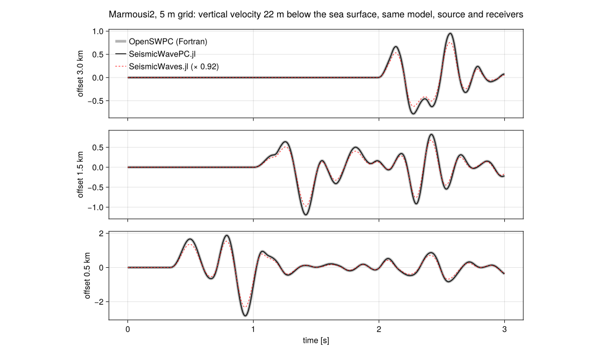

Validation
The test suite compares seismograms (velocity, displacement, stress and strain) with the Fortran OpenSWPC code (swpc_psv, swpc_sh, swpc_3d; reference traces are in test/reference):
| Solver | Model | Max. difference to OpenSWPC (Cerjan / PML) |
|---|---|---|
| 2D P-SV | two layers, free surface, Q = 50 | 5 × 10⁻⁴ / 3 × 10⁻⁴ |
| 2D SH | two layers, free surface, Q = 50 | 2 × 10⁻⁶ / 2 × 10⁻⁶ |
| 3D | two layers, free surface with a topographic step, Q = 50 | 7 × 10⁻⁶ / 6 × 10⁻⁶ |
On Marmousi2 (5 m grid, 3 s, an explosion and 161 receivers 22 m below the sea surface, PML) the three codes give the same waveforms. OpenSWPC agrees to 10⁻³ (vertical) and 0.7 % (horizontal velocity) with the same amplitude. SeismicWaves.jl agrees to 6 % (vertical) and 2 % (horizontal) after one amplitude factor per component (it uses the opposite sign of moment tensors and z down; its free surface is half a cell lower and its receivers are snapped to grid points, which changes amplitudes close to a free surface):

Exact solutions and JUDI.jl (Devito)
Errors are relative L2 differences of all traces after one amplitude factor per component (the codes normalize sources differently); P-SV, 5 m grid, explosion with the same Ricker wavelet (5 Hz), PML (JUDI.jl: sponge), receivers recording pressure p and velocities.
Water half-space against the exact solution (image source; free surface at z = 0):
| Source / receivers (depth) | Code | p | vx | vz |
|---|---|---|---|---|
| 10 m / 10 m, offsets 0.1–1.5 km | JUDI.jl, 4th order | 3.0 % | 2.7 % | 0.2 % |
| JUDI.jl, 8th order | 3.0 % | 2.7 % | 0.1 % | |
SeismicWavePC.jl, interpolation = :sinc | 7.3 % | 5.0 % | 0.9 % | |
SeismicWavePC.jl, :cell | 15 % | 5.3 % | 2.5 % | |
| 600 m / 10 m (waves from below) | SeismicWavePC.jl, :sinc | 0.3 % | 0.9 % | 0.7 % |
| 10 m / 600 m (waves downwards) | SeismicWavePC.jl, :sinc | 0.3 % | 0.9 % | 0.9 % |
Pressure and horizontal velocity at a few cells below the free surface, for waves travelling along it, are the hardest case: there JUDI.jl, with 4th-order differences up to its (flat, mirrored) free surface, is twice as accurate; SeismicWavePC.jl uses 2nd-order differences next to free surfaces, as OpenSWPC, which also handles topography.
Convergence with the grid spacing on a smooth model: a flat sea floor at 300 m depth (on a cell boundary for all grids) over rock with a velocity gradient and a Gaussian anomaly, explosion and 30 receivers 10 m below the sea surface, 1.6 s. Difference to the 1.25 m solution of either code:
| Run | vs SeismicWavePC.jl 1.25 m (p, vx, vz) | vs JUDI.jl 1.25 m (p, vx, vz) |
|---|---|---|
| SeismicWavePC.jl, 5 m | 2.1 %, 3.6 %, 0.6 % | 5.7 %, 4.2 %, 3.7 % |
| SeismicWavePC.jl, 2.5 m | 1.6 %, 2.3 %, 0.3 % | 5.4 %, 3.2 %, 3.9 % |
| JUDI.jl (8th order), 5 m | 20 %, 11 %, 16 % | 15 %, 8.3 %, 13 % |
| JUDI.jl (8th order), 2.5 m | 11 %, 6.0 %, 8.7 % | 5.8 %, 3.3 %, 4.7 % |
| JUDI.jl (8th order), 1.25 m | 5.3 %, 3.1 %, 4.0 % | — |
The SeismicWavePC.jl seismograms barely change between 5 m and 1.25 m, whereas the difference of JUDI.jl to them halves with every refinement: JUDI.jl converges to the same solution, but more slowly on this model, as expected when the material is defined at the grid nodes (the sea floor lies between two nodes) rather than in the cells.
The tests also check:
- misfit gradients against automatic differentiation (Enzyme, agree to round-off) and finite differences of whole simulations, in 2D and 3D, with attenuation and waves in the PML; source gradients, misfit options and several shots against finite differences;
- MPI runs with 4 processes against serial runs (identical; also the gradients);
- CPU against Metal (agree to 10⁻⁶) and against CUDA on an NVIDIA A100 (
examples/check_cuda.jl: forward simulations and gradients agree to 10⁻¹⁴ in double precision), and MPI on two A100 GPUs against a serial run (examples/check_cuda_mpi.jl, also 10⁻¹⁴); - the interfaces to Optim, LogDensityProblems, ChainRules and ForwardDiff;
- type stability with JET.jl.